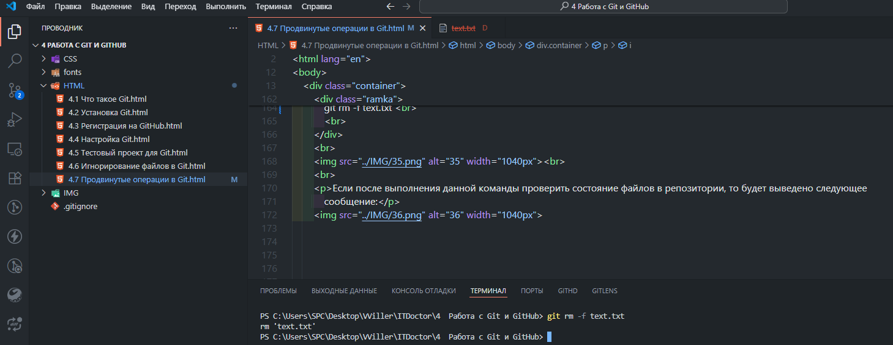

4.7 Продвинутые операции в Git
Короткая форма статуса в Git
Сообщения о статусе файлов могут показаться немного многословными. Поэтому существует возможность вывести статус в короткой форме. В этой форме статус файлов будет показыватся соответствующей буквой перед именем файла:
| Статус | Описание |
|---|---|
| нет буквы | unmodified (неизмененный) |
| M | modified (модифицированный) |
| T | file type changed (изменен тип файла) |
| A | added (добавлен) |
| D | deleted (удаленный) |
| R | renamed (переименованный) |
| C | copied (скопированный) |
| U | updated but unmerge (обновленный, но не слившийся воедино) |
Для того, чтобы вывести статус в короткой форме нужно воспользоваться следующей командой:
git status -s
Посмотрите статус в короткой форме.

В каких состояниях находится файлы, если для них выдало:
A text1.txt added (добавлен)
text2.txt unmodified (неизмененный)
D text3.txt deleted (удаленный)
M text4.txt modified (модифицированный)
Просмотр изменений файлов в Git
Иногда необходимо посмотреть, какие изменения были внесены в файлы после предыдущей индексации. Это делается с помощью команды diff:
git diff

Зафиксируйте состояние файла.

Теперь внесите изменения в файл.

Просмотрите изменения с помощью команды diff.

Пропуск индексации измененных файлов в Git
В Git есть возможность одной командой сделать и индексацию файлов и коммит, таким образом упростив себе
работу, сведя
все к одной команде, а не к двум.
Для этого добавляем к команде commit флаг -a, а команду add пропускаем:
git commit -a -m "Сделал изменения"
В результате выполнения этой команды все отслеживаемые на этот момент файлы автоматически проиндексируются. Однако не стоит злоупотреблять этой командой, поскольку в одном стеке могут сохраниться и нежелательные изменения.
Попробуйте описанную команду.
Удаление файлов в Git
При работе с Git нельзя вручную удалять файлы из папки с проектом. Если мы попытаемся сделать это, то после проверки командой status, он будет отображаться в категории 'Changes not staged for commit' как измененный, но не проиндексированный файл. Чтобы наверняка удалить ненужный нам файл следует использовать команду git rm -f:
git rm -f text.txt

Команда «git rm -f text.txt» в Git позволяет удалить из отслеживаемых индексированный файл text.txt из папки. Флаг «-f» в этой команде заставляет удалять файлы с ограничениями, которые препятствуют обычному удалению.
Переименование файлов в Git
Для переименования файлов в Git используется команда mv. Мы указываем в ней старое имя файла и новое имя в следующем порядке:
git mv old.txt new.txt
После проверки статуса файлов в терминале будет выведено сообщение о переименовании файла:
Changes to be committed:
renamed: old.txt -> new.txt
Перемещение файлов в Git
Команда mv также используется для перемещения файлов. Давайте, например, переместим файл из одной папки в другую:
git mv text.txt folder/text.txt
Changes to be committed:
renamed: old.txt -> new.txt